| family | father | mother | midparentHeight | gender | childHeight |
|---|---|---|---|---|---|
| 001 | 78.5 | 67.0 | 75.43 | male | 73.2 |
| 001 | 78.5 | 67.0 | 75.43 | female | 69.2 |
| 001 | 78.5 | 67.0 | 75.43 | female | 69.0 |
| 001 | 78.5 | 67.0 | 75.43 | female | 69.0 |
| 002 | 75.5 | 66.5 | 73.66 | male | 73.5 |
| 002 | 75.5 | 66.5 | 73.66 | male | 72.5 |
Week 4 · Lecture
Relationships
& structure
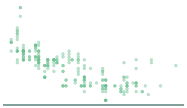
Dr. Philipp K. Masur
Data Science: Visualisation and Analytics in R · Vrije Universiteit Amsterdam
Your charts
Last week’s portfolio entries, without names. Describe first, judge last.
Four steps, for a pair
01 · Describe
What is on each half?
Which rows, which column, which form, and the binwidth if one is given.
02 · Analyse
Which setting changed between the two?
How wide the bins are, how smooth the curve is, what stands in for the data, or what the whisker shows.
03 · Interpret
What shape does each half claim?
One hump or two, where the middle is, how wide.
04 · Judge
Does the note name the setting that did the work?
And does the caption say the binwidth?
How wide the bins are hides best, because a finished chart rarely prints it.
Pair 1 · the sketch
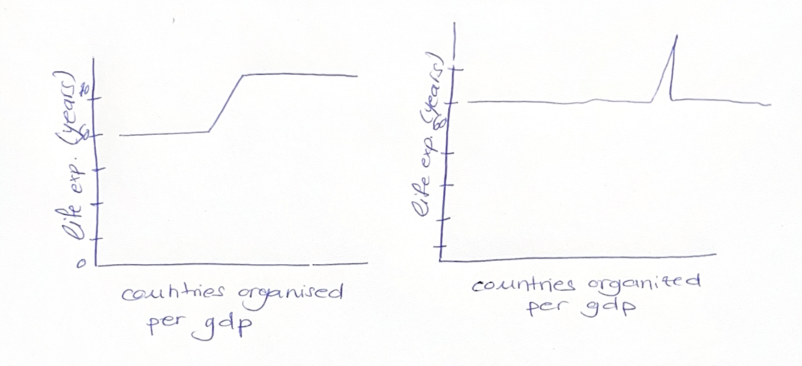
- The claim to support: In 2007 most countries lived into their seventies, and a long shelf of countries sat twenty years below.
- The twin: In 2007 life expectancy had a single peak, and the typical country lived to 67.
What is along the bottom of this sketch?
Pair 1 · the chart and its twin
Chart
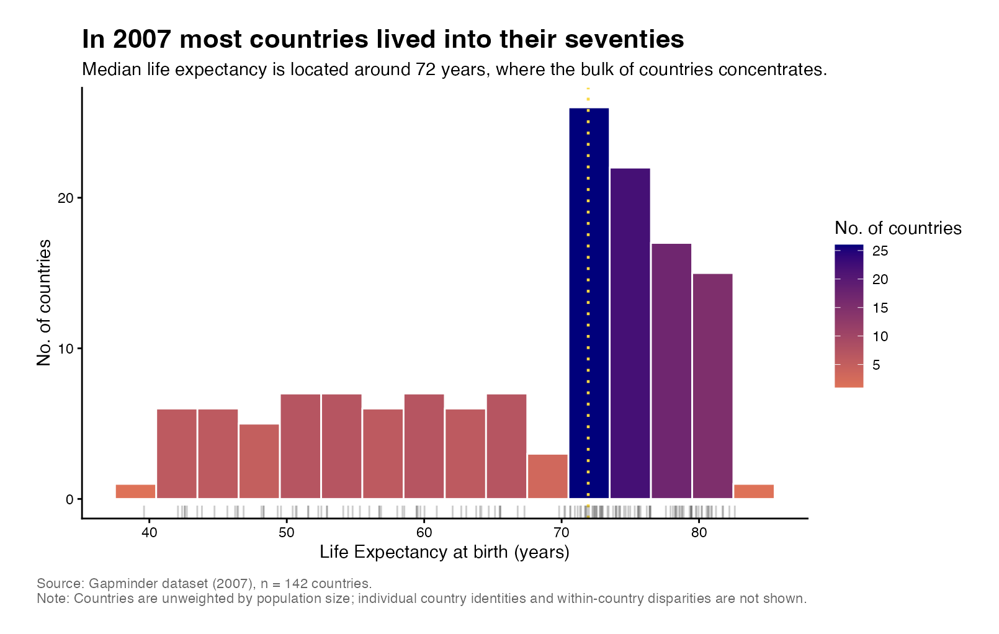
Describe: 142 countries, bars about three years wide, the median dotted, a rug. Interpret: a long shelf, then a tall block from 70. The colour repeats each bar’s height.
Twin
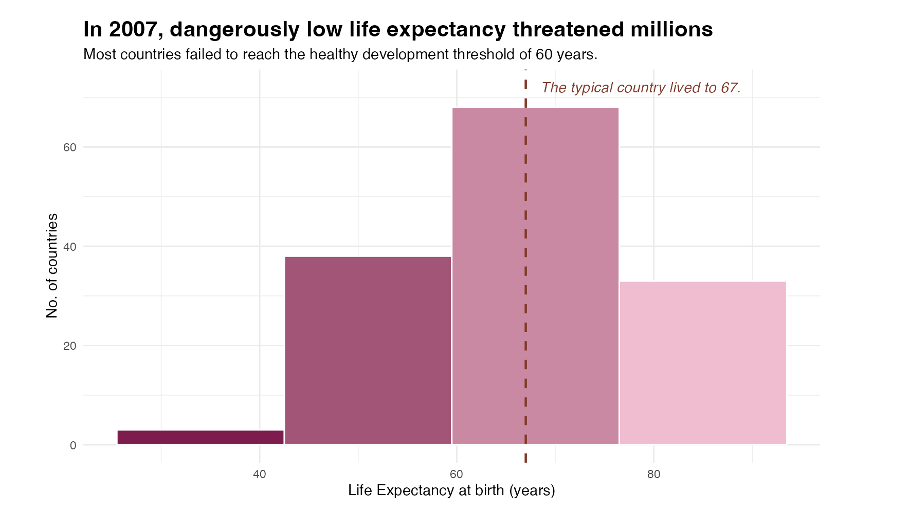
Describe: the same 142, in four bars about seventeen years wide, the mean dashed. Interpret: one hump, around 67, and a new title.
Step 2: which setting changed? Step 4: is every sentence on the twin true?
The bins did the work, and neither caption says how wide they are. The twin’s subtitle is false: 43 of 142 countries were below 60, not most. And a chart of countries cannot say “millions”.
Pair 2 · the sketch
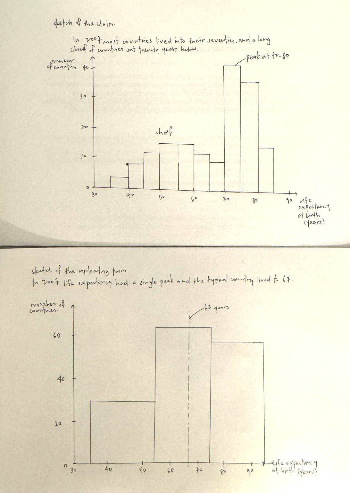
- The claim to support: In 2007 most countries lived into their seventies, and a long shelf of countries sat twenty years below.
- The twin: In 2007 life expectancy had a single peak, and the typical country lived to 67.
The same claims as pair 1. What did this sketch decide before any code was written?
Pair 2 · the chart and its twin
Chart
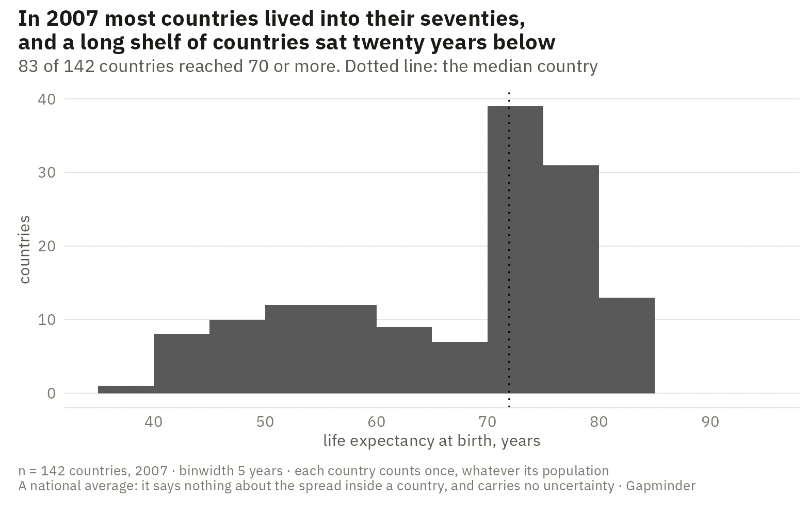
Describe: bars five years wide, the median dotted, the binwidth in the caption. Interpret: the shelf and the peak, as the sketch had them.
Twin
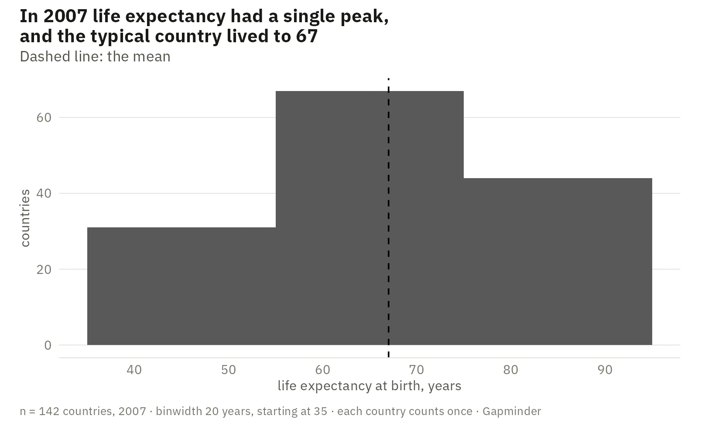
Describe: the same 142 in bars twenty years wide, the mean dashed, the binwidth in the caption. Interpret: one peak, around 67.
Step 2: which settings changed? Step 4: would a reader who saw only the twin notice?
How wide the bins are, five years against twenty, and both captions say so. The mean replaced the median too. Look at the last bar: it runs to 95, and no country was above 83.
The first regression line (1886)
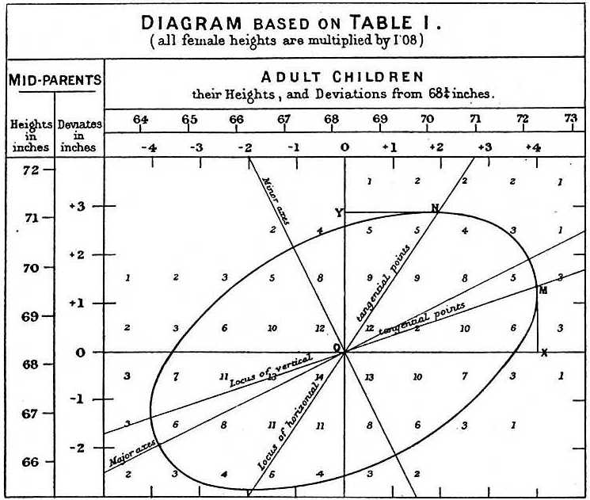
What does this chart show?
“Diagram based on Table I”, from F. Galton (1886), Regression towards mediocrity in hereditary stature, Journal of the Anthropological Institute of Great Britain and Ireland, 15, 246–263. Public domain; scan via Wikimedia Commons.
Who drew it, and how he got the data
- Francis Galton, a British scientist and Charles Darwin’s half-cousin, studied how traits pass from parents to children. In 1884 he offered prizes for detailed family records, and from them took the heights of 205 couples and their adult children
- He coined the word eugenics in 1883, and this study of heredity was part of that programme. Regression and correlation grew out of it
- How to read it: each number counts the adult children in one cell, their own height across the top and their parents’ average height down the side. Daughters’ heights are multiplied by 1.08, to put them on their brothers’ scale
- The oval joins cells with about the same count. The two lines through its centre are Galton’s: how children’s heights change with their parents’, and the other way round
The data: 934 children of 205 families
Six of the 934 rows
- One row is one adult child: the family, both parents’ heights, their average with the mother’s times 1.08, and the child’s height, in inches
- Galton’s notebook survives. Beverley Shipley transcribed it for James Hanley in 2001, and it ships with R’s HistData package
- Heights were recorded to the nearest inch or half inch, so many children share exactly the same height
Hanley, J. A. (2004). “Transmuting” women into men: Galton’s family data on human stature. The American Statistician, 58(3), 237–243. Data: HistData::GaltonFamilies (GPL).
Rebuilt in R
galton |>
mutate(height = if_else(gender == "female",
childHeight * 1.08,
childHeight)) |>
ggplot(aes(midparentHeight, height)) +
geom_point(alpha = .2, size = 1, position =
position_jitter(.2, .2, seed = 1)) +
geom_smooth(method = "lm",
colour = dsvar_accent()) +
labs(x = "Parents' average height (inches)",
y = "Adult child's height (inches)",
title = "Taller parents, taller children")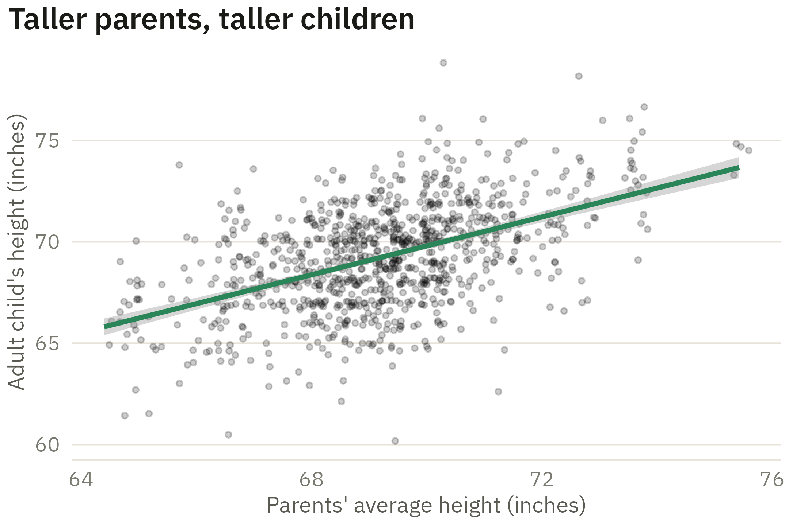
The same cells, as one point per child. Heights in whole inches pile up on top of each other, so position_jitter() moves each point a fraction of an inch. Galton’s counts in cells were his answer to the same problem.
One change: the line where children equal parents
galton |>
mutate(height = if_else(gender == "female",
childHeight * 1.08,
childHeight)) |>
ggplot(aes(midparentHeight, height)) +
geom_point(alpha = .2, size = 1, position =
position_jitter(.2, .2, seed = 1)) +
geom_abline(slope = 1, intercept = 0,
linetype = "dashed") +
geom_smooth(method = "lm",
colour = dsvar_accent()) +
labs(x = "Parents' average height (inches)",
y = "Adult child's height (inches)",
title = "Children are closer to the average")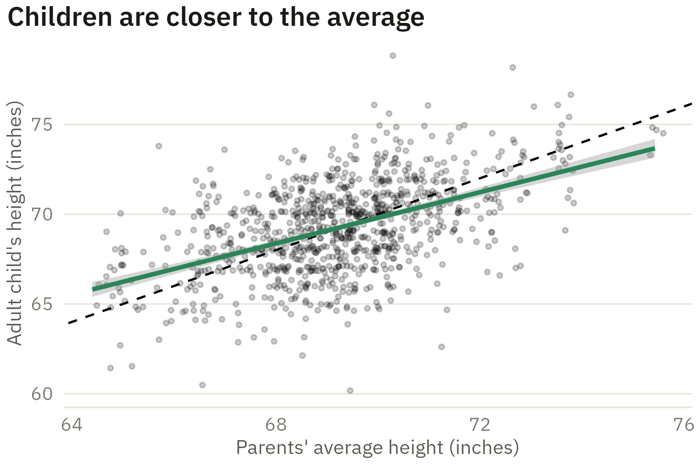
Each inch of the parents’ height goes with 0.71 of an inch in the children’s: parents at 72 inches have children averaging 71.2, parents at 64, 65.5. Galton called it regression towards mediocrity. It runs from children to parents too: a correlation below 1, not a force.
What else Galton drew
- The oval runs through places where the points are equally dense. Galton drew his by hand; this one assumes a bell shape in both directions and holds about 70% of the children
- The long and short axes are where the oval is widest and narrowest. Neither predicts anything
- The green line predicts children from parents: 0.71 of an inch per inch. The dashed line predicts parents from children, 0.35 of an inch per inch, so on these axes it is the steeper one. One cloud has two regression lines, and neither is the long axis
- Why charts leave them out: a chart answers one question, here how tall are the children of parents this tall?, so it needs one line. The oval repeats what transparent points already show
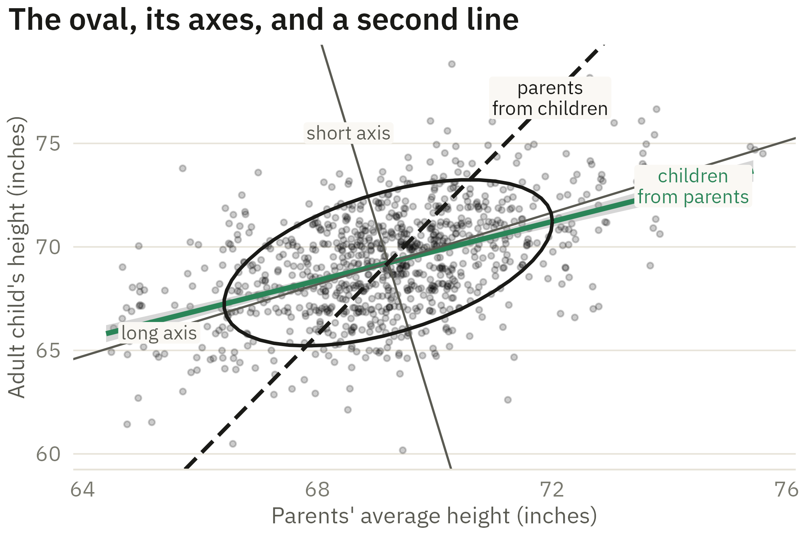
One hundred findings, tested twice (2015)
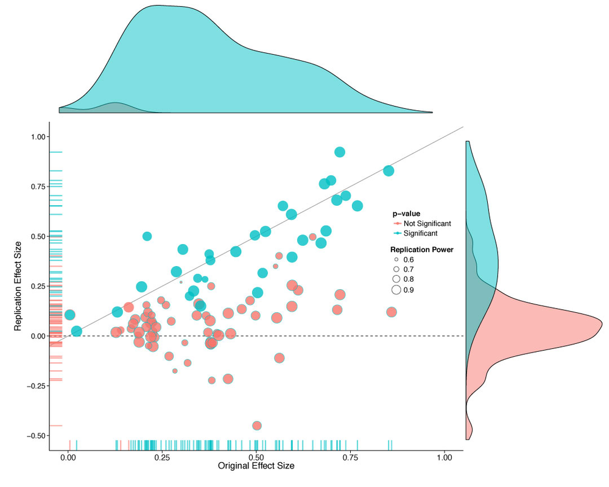
What does this chart show?
“RPP_Figure3”, Open Science Collaboration (2015). Estimating the reproducibility of psychological science. Science, 349(6251), aac4716. Figure file from osf.io/ezcuj, CC0 1.0.
Who ran it, and how to read it
- The Open Science Collaboration, 270 researchers, repeated 100 studies published in three psychology journals in 2008, each with the original’s materials and an analysis written down in advance
- The question was whether a published finding shows up again when someone else runs the same study
- How to read it: each dot is one finding, measured twice: the original effect across, the replication’s effect up, both as a correlation. Colour says whether the replication was significant, and size how likely it was to detect the effect
- The grey diagonal is where the second result equals the first. The short marks on the axes, a rug, repeat each dot’s position, so each variable’s spread can be read on its own
Rebuilt in R
rpp |>
ggplot(aes(orig, rep, colour = replication)) +
geom_hline(yintercept = 0, linetype = "dashed") +
geom_abline(slope = 1, intercept = 0,
colour = "grey50") +
geom_point(size = 2, alpha = .6) +
geom_rug(alpha = .6) +
scale_colour_manual(
values = c(dsvar_accent(), "grey60")) +
coord_cartesian(xlim = c(0, 1),
ylim = c(-.5, 1)) +
labs(x = "Original effect size (r)",
y = "Replication effect size (r)",
colour = "Replication",
title = "Most replications found less")rpphas one row per finding, both effects as correlations: 97 pairs- 81 sit below the diagonal, and 34 replications were significant. The average effect fell from 0.40 to 0.20
- The original also sizes each point by power and draws density curves in the margins
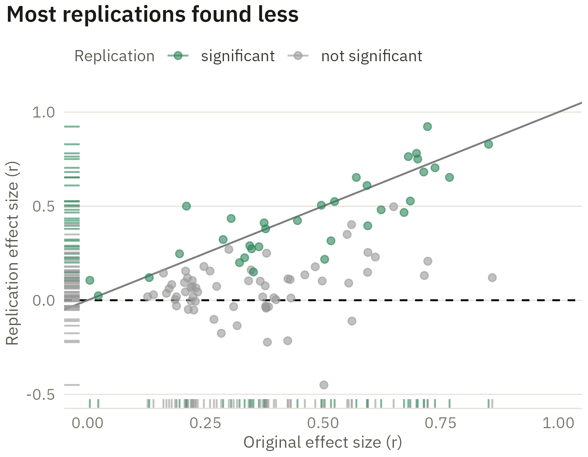
One change: fit a line where the diagonal was
rpp |>
ggplot(aes(orig, rep, colour = replication)) +
geom_hline(yintercept = 0, linetype = "dashed") +
geom_smooth(aes(group = 1), method = "lm",
colour = "grey30") +
geom_point(size = 2, alpha = .6) +
geom_rug(alpha = .6) +
scale_colour_manual(
values = c(dsvar_accent(), "grey60")) +
coord_cartesian(xlim = c(0, 1),
ylim = c(-.5, 1)) +
labs(x = "Original effect size (r)",
y = "Replication effect size (r)",
colour = "Replication",
title = "Bigger originals, bigger replications")- Original and replication correlate at 0.60: by the fitted line, the originals predicted well
- The diagonal asked for the same effect, and they found about half
- Journals favoured significant originals, which are often large by chance: Galton’s regression, after a selection
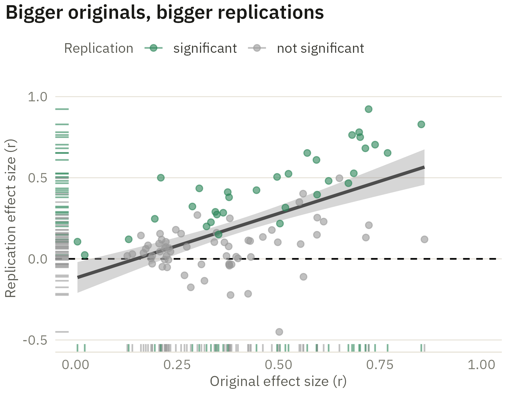
Twenty-nine teams, one dataset (2018)
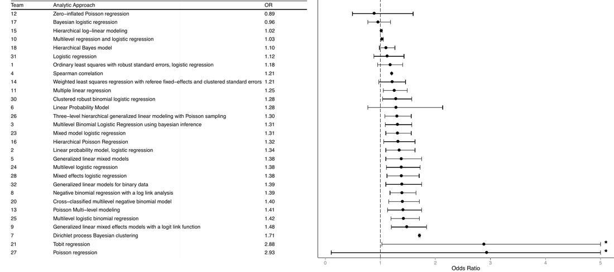
What does this chart show?
“Results summary”, Silberzahn, R., Uhlmann, E. L., Martin, D. P., et al. (2018). Many analysts, one data set. Advances in Methods and Practices in Psychological Science, 1(3), 337–356. Figure file from osf.io/gvm2z, CC0 1.0.
Who asked, and how to read it
- Raphael Silberzahn, Eric Uhlmann and colleagues gave 29 teams of analysts, 61 people, the same dataset and the same question: are football referees more likely to show red cards to players with darker skin?
- The dataset: 2,053 players and 3,147 referees, with every red card between each pair, and each player’s skin tone rated from photographs
- Each team chose its own analysis, and reported one estimate
- How to read it: each row is a team. The dot is its odds ratio, how many times as likely a red card was for darker-skinned players, and the line its 95% interval. At 1 there is no difference
Rebuilt in R
teams |>
ggplot(aes(est, factor(team))) +
geom_vline(xintercept = 1, linetype = "dashed") +
geom_pointrange(aes(xmin = lo, xmax = hi),
size = .3) +
scale_x_log10() +
coord_cartesian(xlim = c(.4, 4)) +
labs(x = "Odds ratio of a red card (log scale)",
y = "Team",
title = "Twenty-nine teams, one dataset") +
theme(axis.text.y = element_text(size = 7))teamshas one row per team: its estimate and its interval- Four teams reported in other units; these are converted to odds ratios, as the original does
- In team order, the 29 answers look like noise
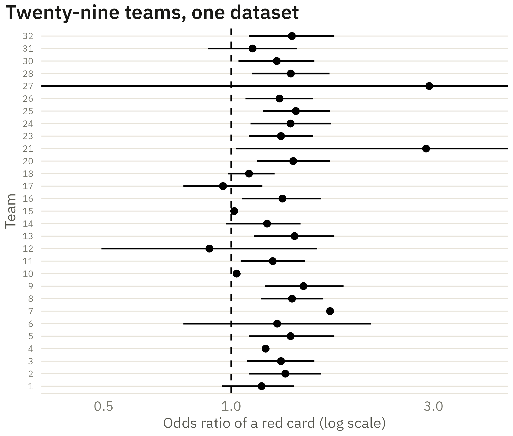
One change: sort it, and name the verdicts
teams |>
mutate(found = if_else(lo > 1, "an effect",
"no clear effect"),
team = fct_reorder(factor(team), est)) |>
ggplot(aes(est, team, colour = found)) +
geom_vline(xintercept = 1, linetype = "dashed") +
geom_pointrange(aes(xmin = lo, xmax = hi),
size = .3) +
scale_x_log10() +
coord_cartesian(xlim = c(.4, 4)) +
labs(x = "Odds ratio of a red card (log scale)",
y = "Team", colour = "The team found",
title = "Twenty found an effect, nine did not") +
theme(axis.text.y = element_text(size = 7)) +
scale_colour_manual(
values = c(dsvar_accent(), "grey60"))- 20 intervals lie wholly above 1, 9 cross it, and none lies below
- Every team had the same data, so this spread comes from the analyses, and no interval on the chart includes it. Part VIII comes back to it
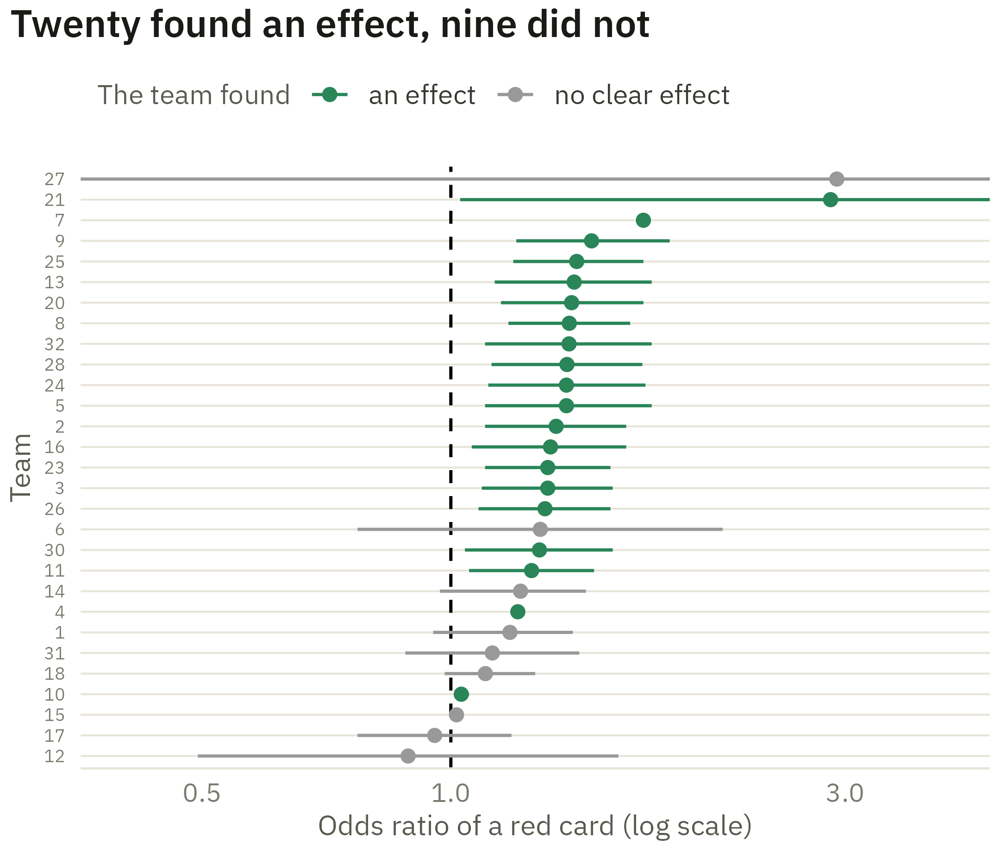
Every line is a choice
A line fitted through families, a diagonal nobody fitted, and 29 answers from one dataset. Each time, somebody decided which line the reader would see.
This lecture
I
Two continuous variables
How the data was made, and what that lets a line mean
II
Building a scatterplot with ggplot
Points, a linear model and its two numbers, the line, the claim
III
How points pile up
When a thousand people look like ten
IV
Which line is drawn
Straight, bent or squared, and what its band is about
V
What an equal step means
Dollars or per cent: linear and log axes, side by side
VI
The third variable
Moderation: one relationship that differs between people, drawn four ways
VII
Drawing a model
From lm() to a coefficient plot, in steps, for one outcome and for three
VIII · IX
How many analyses? This week
Every defensible analysis at once; then the bullshit chart and Thursday
I · Two continuous variables
Three weeks, in seven principles
01
The summary is not the data
02
Every slot is a choice
03
Put what matters in the strongest channel
04
A chart can be beautiful and wrong
05
Every chart carries its uncertainty
06
Compared to what? Say so.
07
Show the shape. Name the whisker.
Week 3 added principle 7 and four settings under it: how wide the bins are, how smooth the curve is, what stands in for the data, and what the whisker shows. This week adds principle 8, for two continuous variables.
From a question to a chart, again
QuestionDoes more school mean more pay?
DesignSet one variable, or measure both
MeasurementWhat was asked, and which answers were possible
SampleWho happened to be asked
DatasetOne row per person
AnalysisLines, models, coefficients
ChartWhat the reader sees
How the data was made
- In an experiment the researcher sets one variable, like the feeds in weeks 1 and 2, so a line shows its effect. In a survey both are measured as they come, and something else may be behind both
- The measurement decides where points can be. Answers in whole years or whole inches put them in stripes
- The sample decides which part of the cloud exists. Only people with a job have a wage
What was done with it
- What one row of the dataset is, a person, a family or a study, is what one point is
- The analysis decides which line is drawn, and what else it holds constant
- The chart decides how overlapping points are shown, and what an equal step on an axis means
The dataset: 3,987 working people in Ontario
Six of the 3,987 rows
| wages | education | age | sex | language |
|---|---|---|---|---|
| 10.56 | 15.0 | 40 | Male | English |
| 11.00 | 13.2 | 19 | Male | English |
| 17.76 | 14.0 | 46 | Male | Other |
| 14.00 | 16.0 | 50 | Female | English |
| 8.20 | 15.0 | 31 | Male | English |
| 16.97 | 13.5 | 30 | Female | English |
- Statistics Canada’s Survey of Labour and Income Dynamics, 1994: households across Canada were interviewed every year about work and income. These are the people of Ontario
- One row is one person: hourly wage from all their jobs, years of school, age, sex and first language
- 7,425 people were interviewed. 3,278 have no wage, mostly because they had no job, so every chart of wages here is about people in work
Statistics Canada public-use data, prepared by the Institute for Social Research, York University; as SLID in Fox, J., & Weisberg, S. (2019). An R Companion to Applied Regression (3rd ed.), carData package (GPL).
Each variable on its own first
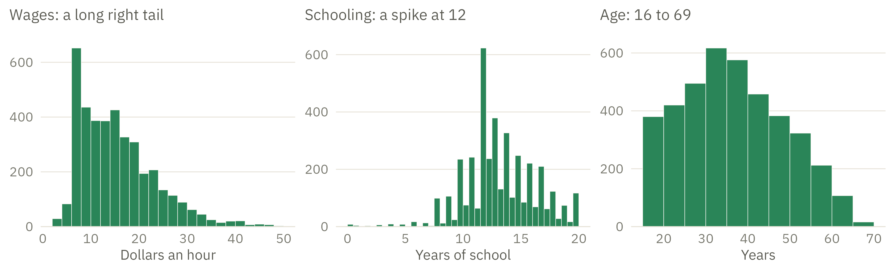
Last week’s lesson first. Wages have a long tail to the right, which Part V deals with. Years of school pile up at 12, where high school ends: 606 people report exactly that, which Part III deals with. n = 3,987.
II · Building a scatterplot with ggplot
Start with points
- Two columns, two positions: years of school across, the hourly wage up. One point per person
- The points stand in columns where many people report the same number of years
- Is there a relationship? Hard to say: most of the 3,987 points sit on top of each other
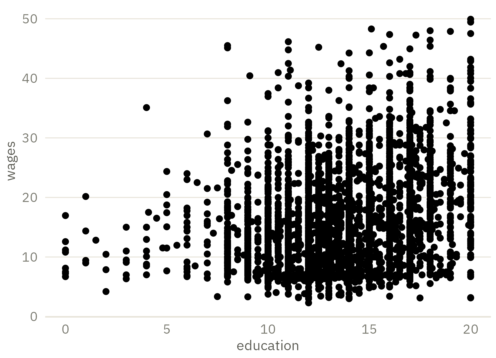
Make the points transparent
alpha = .1makes each point nearly transparent, so the colour adds up where points overlap. Ten on one spot make it black.size = 1makes them smaller- Now there is a shape: most people have between 10 and 15 years of school, and the cloud rises slowly to the right
- The columns of points are still there. Part III comes back to them
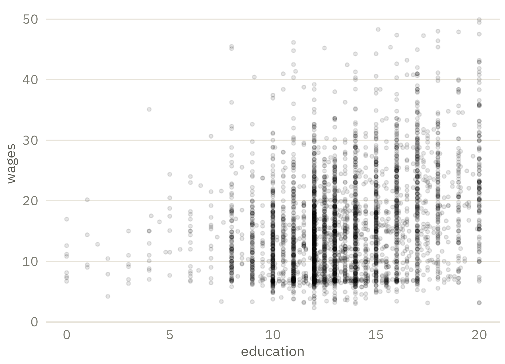
A linear model: one line, two numbers
- A linear model describes one variable as a straight line of another: wage = a + b × years of school
lm()finds the a and b whose line passes closest to the points. It measures each person’s vertical distance from the line, squares it, and makes the sum as small as it can- Intercept, a = 4.97: the wage the line gives at 0 years of school
- Slope, b = 0.79: each extra year of school goes with 79 cents more an hour

wage = 4.97 + 0.79 × years of school
Add the line
geom_smooth(method = "lm")fits the same model and draws its line, with a 95% band around it
- The line starts at the intercept: $4.97 at 0 years of school
- It climbs by the slope. Five more years of school: 5 × 0.79 = $3.96 more an hour
- A line is a model. It claims a straight shape, and that everyone under it belongs together. Parts IV to VI test those claims
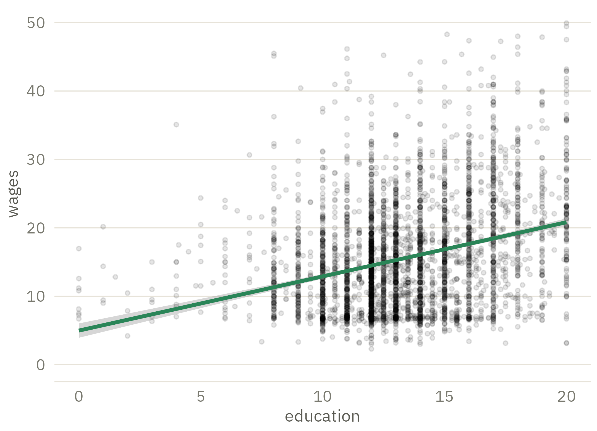
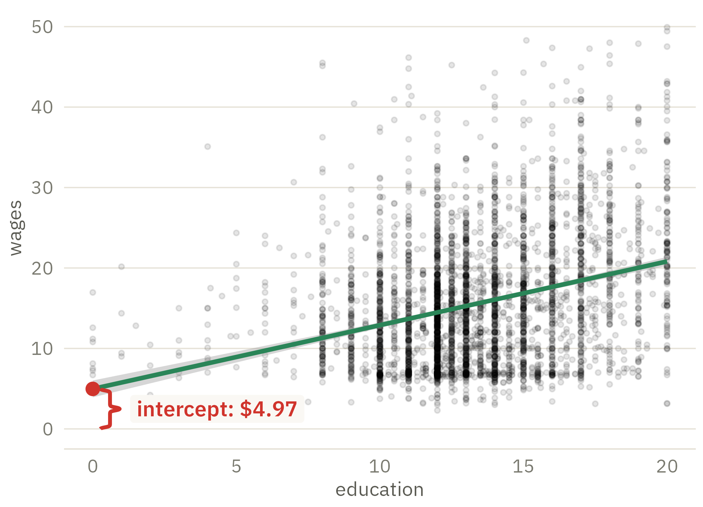
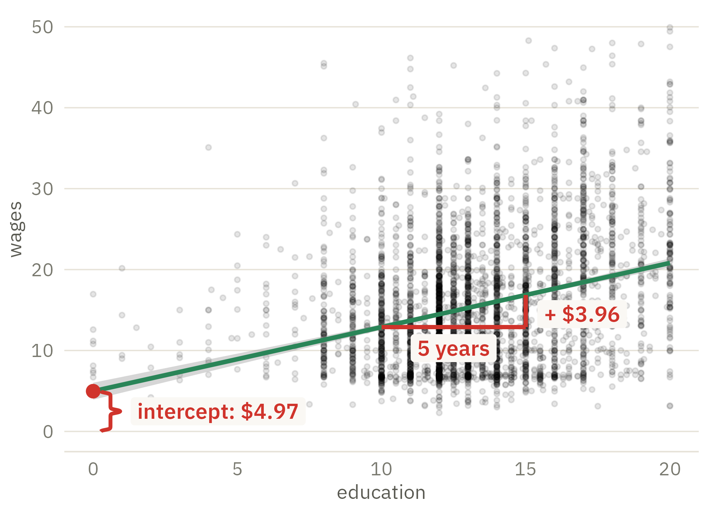
Add the claim
ggplot(slid, aes(education, wages)) +
geom_point(alpha = .1, size = 1) +
geom_smooth(method = "lm") +
labs(
title = "A year of school: 80 cents more an hour",
subtitle = "Hourly wage, Ontario 1994",
x = "Years of school", y = "Dollars an hour",
caption = paste0(
"n = 3,987 people in work · band: 95% ",
"interval for the line\n",
"A survey, not an experiment"))- The title says the finding, in units a reader knows
- The caption says what the band is, and what the chart cannot tell you: why schooling and pay go together.
\nstarts its second line
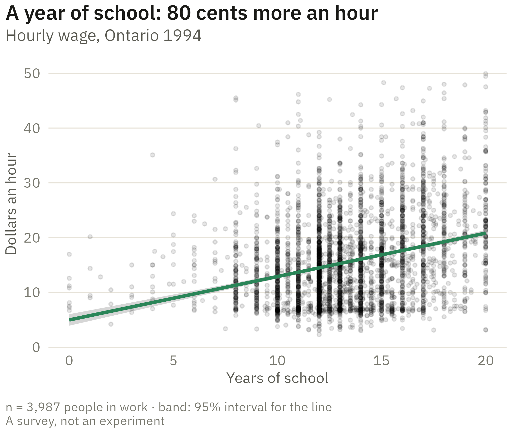
III · How points pile up
Four thousand people, and the densest place can look like the emptiest.
Ten points, or a thousand?
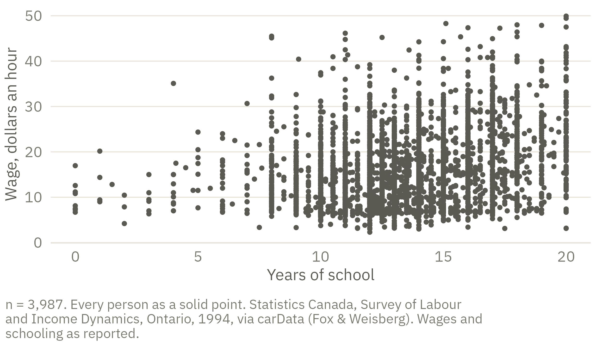
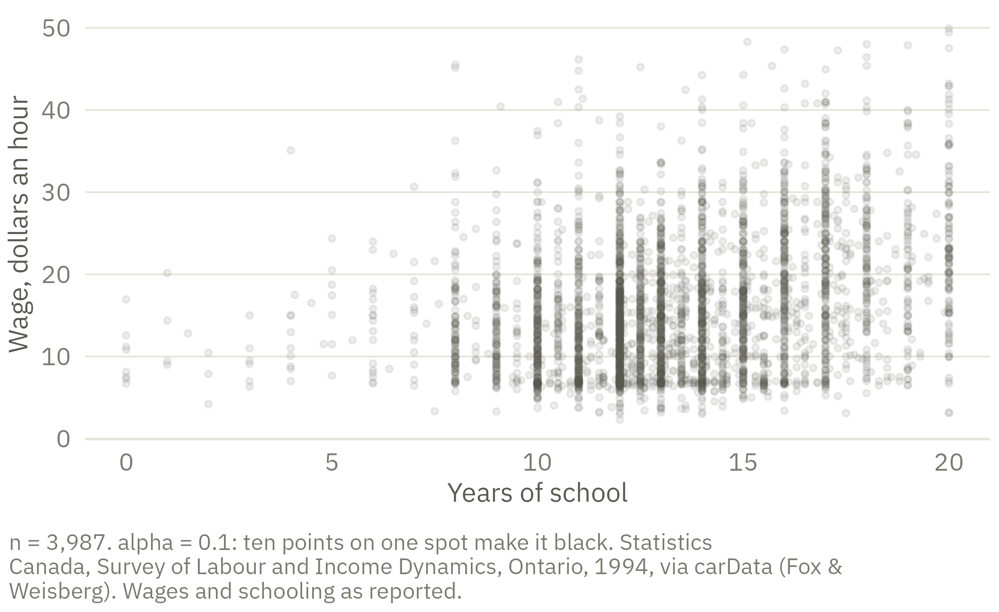
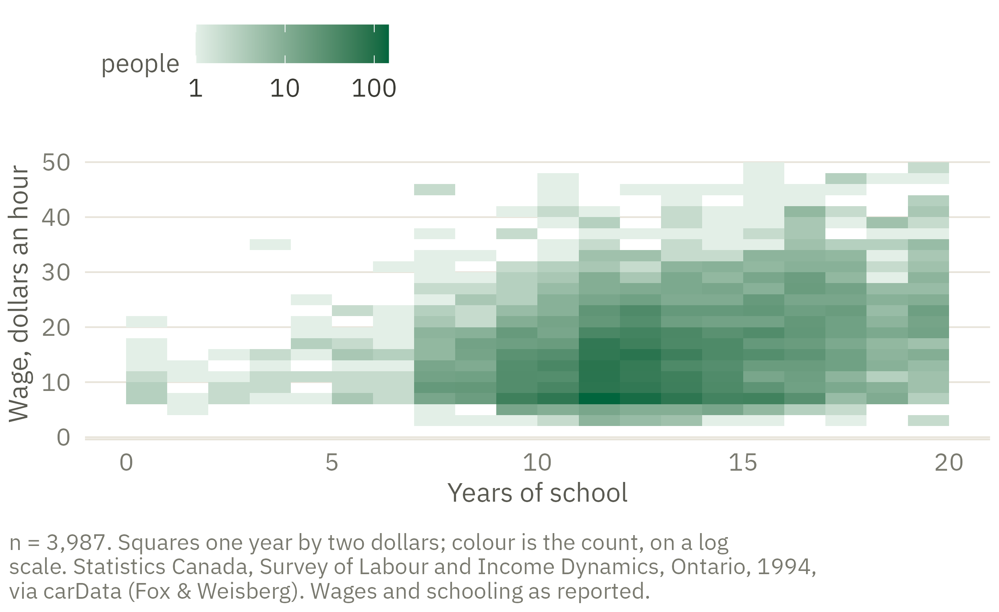
- Solid: a place with a thousand people looks as full as one with ten
- Transparent: points add up, and how dark a place gets depends on the
alphayou chose. Nobody is moved, so the stripes stay
- Counted:
geom_bin_2d()cuts the plane into squares and colours each by its count. Week 3’s bins, in two dimensions, and the caption names their size
Move the points apart
- The survey recorded schooling mostly in whole years, so people stand in columns. Galton’s inches did the same. The stripes come from the measurement
geom_jitter()moves each point sideways by a random amount, here up to a quarter of a year.height = 0leaves every wage where it was- The points are no longer at their true values, so the caption has to say they were moved
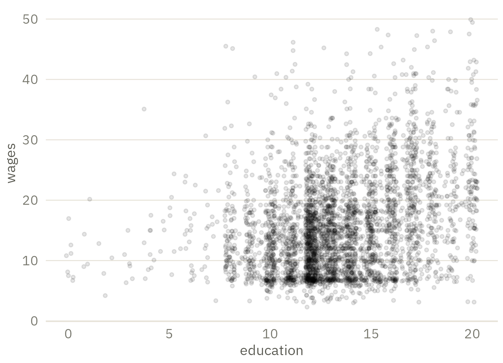
Setting 1 · How points pile up
Let a dense place look dense: transparency, jitter or counts, and say which
- Ask of any scatterplot: could ten points and a thousand look the same here?
- With more than a few hundred points, make them transparent, spread them a little, or count them, and put the choice in the caption
- Week 6 meets the same problem on maps, where many people live in small places
IV · Which line is drawn
A fitted line claims a shape, and that everyone under it is one group.
A straight line through age
- Part II’s model, with age in place of schooling: wage = 6.89 + 0.23 × age
- Slope: each year of age goes with 23 cents more, at 20 and at 60 alike
- Intercept: $6.89 at age 0. Nobody in the data is younger than 16, so this number describes no one. It only says where the line would start
- Now look at the points to the right of 55
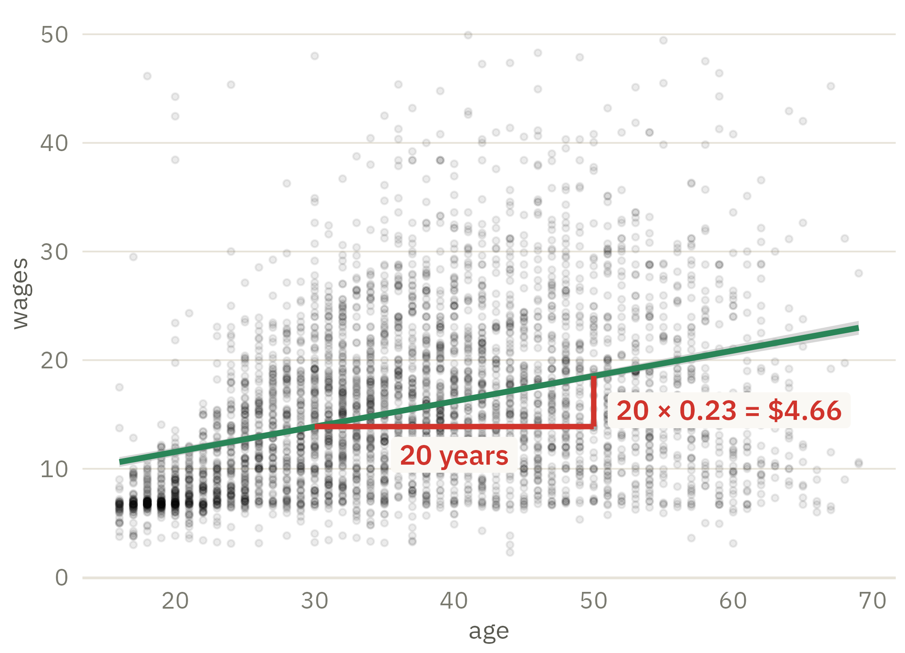
Let the line bend
- Loess fits no single line. At each age it takes the people nearest in age, fits a small regression to them alone, with the closest counting most, and keeps the value at that age. The curve joins those values
- Wages climb from about $9 at 20 to a peak near $19 at 48, then fall back
- It follows the data without an equation: no intercept and no slope to report, only the picture
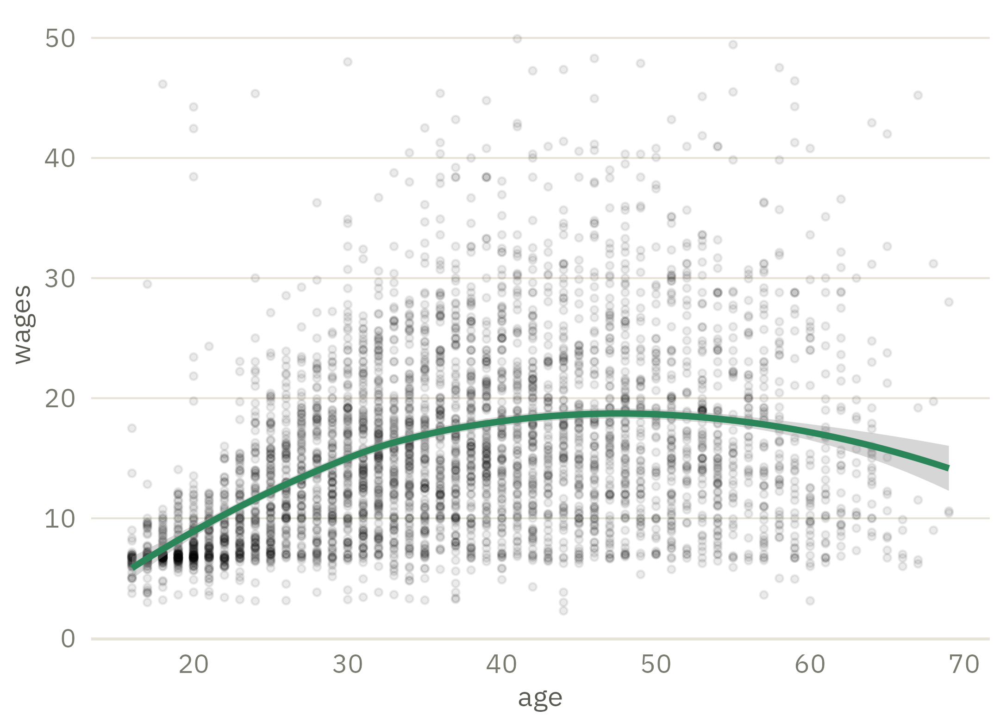
A curve with an equation
(Intercept) age I(age^2)
-10.24724726 1.21716482 -0.01271279 - A straight-line model can bend if it also gets age squared, written
I(x^2). The dashed loess curve is there for comparison - age is positive: wages rise at first. age² is negative: the rise slows with every year
- The curve turns where the two balance, at 1.22 / (2 × 0.0127) = 48 years
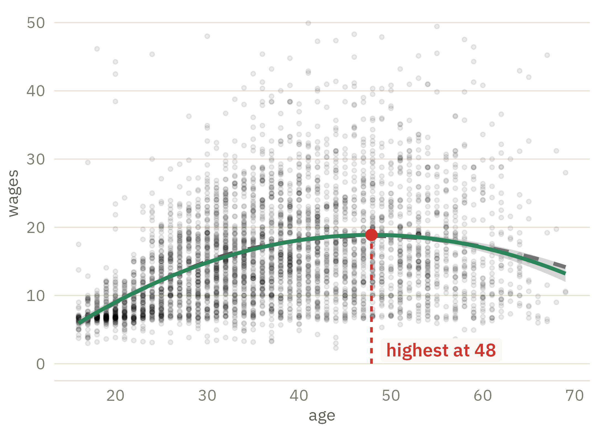
wage = -10.25 + 1.22 × age − 0.0127 × age²
The band is about the line
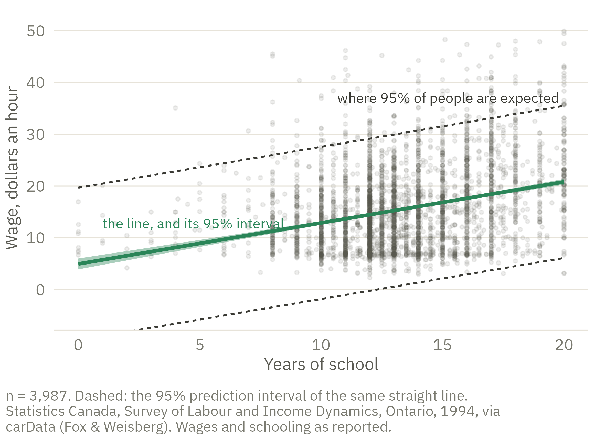
- The green band is the 95% interval for the line: how sure we are of the average wage at each year of school. At 12 years that average is $14.48, give or take 25 cents
- The dashed lines mark where 95% of people are expected to be. At 12 years, anywhere between about $0 and $29
geom_smooth()draws only the band. Last week’s distinction, now for a line: the band describes the estimate, and the people spread far wider
Setting 2 · Which line is drawn
Draw a line the data can carry, and say what it assumes
- Ask of any line: is it fitted or drawn by hand, straight or curved, and is its band about the line or about the people?
- A fitted line answers what does the data do? A reference line is drawn before the data and answers what would it look like if…? Galton’s dashed diagonal and the replications’ diagonal were reference lines, and both carried the finding
- Look at the points before you trust a straight line. Week 5 bends lines through time, where the same choice is how smooth to make them
V · What an equal step means
On a linear axis an equal step adds the same amount. On a log axis it multiplies by the same factor.
Dollars, or per cent?
- On the dollar axis every gridline adds $10. The cloud fans out: high earners spread far above the line, low earners are squeezed together at the bottom
scale_y_log10()gives every doubling the same height: $5 to $10 is now as tall as $20 to $40. The fan evens outgeom_smooth()now fits its line to the logged wages, so its slope is a percentage. Two slides on
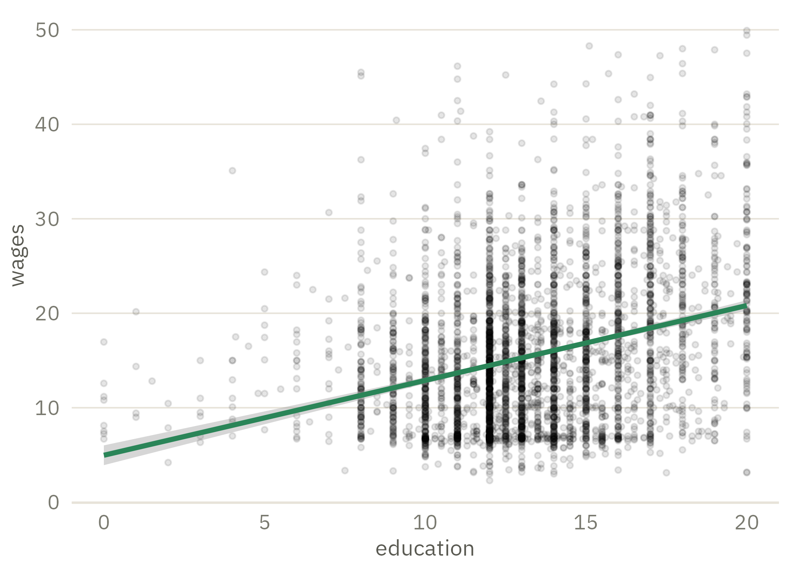
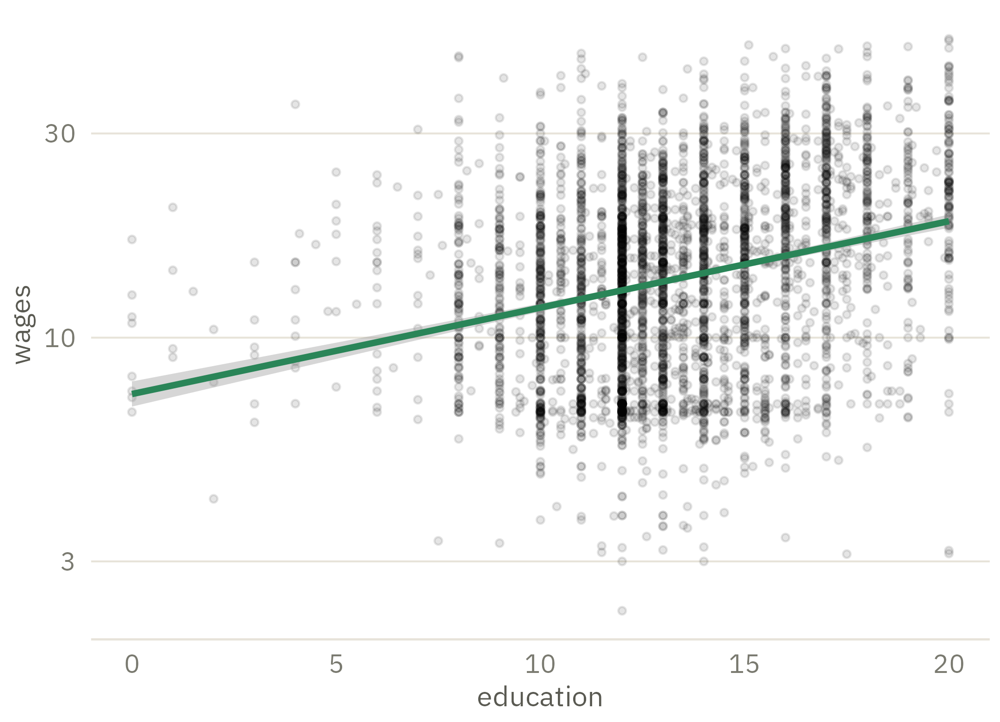
The same people on both axes
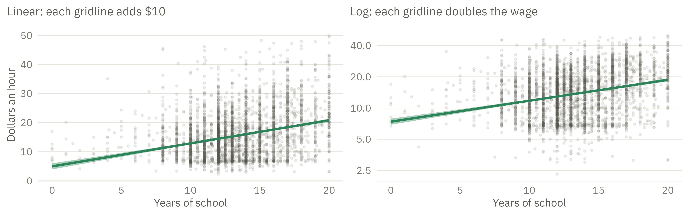
- From $10 to $20 is one gridline in both panels. From $20 to $40 is two gridlines on the left, and still one on the right
- Half of these people earn less than $14. On the left they share the bottom third of the panel; on the right they get more than half of it
Reading a slope in per cent
- Fitted to the logarithm of wages, the slope is 0.0465. Turned back into a ratio, each year of school goes with 4.8% more pay per hour
- On dollars, the line said 0.79 dollars more per year. Both are true. In per cent, the same step is worth more to someone already earning more
- Linear for differences, log for ratios. Incomes mostly differ by ratios, across people and across countries
Setting 3 · What an equal step means
Linear for differences, log for ratios, and say which
- Ask of any axis: does an equal step add the same amount, or multiply by the same factor? And does the claim survive the other one?
- Money, populations and counts that grow by multiplying usually belong on a log axis. A log axis has no zero, so never put bars on it
- Week 2 began this with where the axis starts; a log axis has no start at zero at all
VI · The third variable
Does a year of school pay the same for everyone? When a relationship differs from group to group, the chart needs a third variable.
When a third variable changes the relationship
- Moderation: how strongly one variable goes with another depends on a third. A year of school may pay differently for women and men, or at 25 and at 55
- The same thing is called an interaction
- Mediation: the first variable changes a second, and that one changes the outcome. In our experiment the feed changed what seemed normal, and that changed what people meant to post
- A moderator answers for whom, or when? A mediator answers how? The rest of this part is about moderation
Moderation in a model: the interaction
(Intercept) education
1.9020018 0.8904731
sexMale education:sexMale
5.5895440 -0.1550131 Women: $0.89 more per year of school.
Men: 0.89 − 0.16 = $0.74.
education * sexis short for both variables and their product, the interaction term. It lets the slope of schooling differ between women and men- education, 0.89, is no longer the slope for everyone. It is the slope for women, the group R lists first: a conditional effect, true where the other variable is at its reference or at 0
- education:sexMale, −0.16, is how much the slope changes for men
- sexMale, 5.59, is conditional too: the gap between men and women at 0 years of school, where almost nobody is
Two groups: colour them
colour = sexsplits every layer in two, sogeom_smooth()fits one line per group. These two lines are the interaction model, with slopes of 0.89 and 0.74- Men earn more at every level of schooling, and the gap narrows as schooling rises: $4.35 at 8 years, $2.49 at 20
- For a moderator with two or three groups, colour is enough
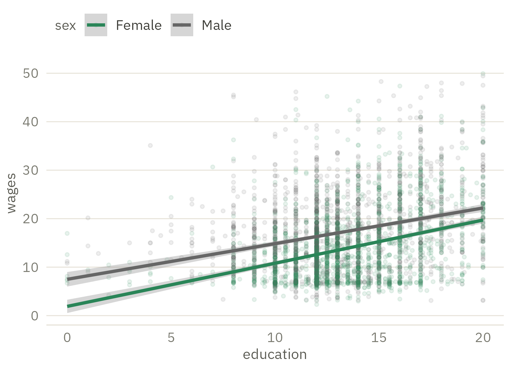
Or give each group a panel
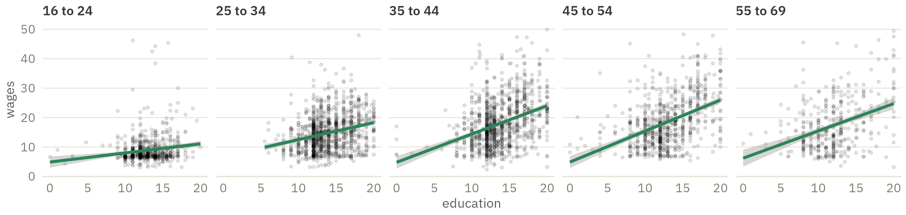
One panel per age group, on one shared wage axis. A year of school goes with $0.31 more an hour at 16 to 24 and $1.05 at 45 to 54: school pays off later in a working life. Age is a number, though, and five groups are five decisions about where to cut. The next slides leave age as it was measured.
A moderator that is a number
(Intercept) education age
4.4515711271 0.0874085323 0.0006927425
education:age
0.0201599210 Effect of a year of school =
0.09 + 0.020 × age
- The same
*, with age in years. Now schooling has a slope at every age - education, 0.09, is the conditional effect at age 0, where nobody is. Read alone, it says school hardly pays
- education:age, 0.020: each year of age adds 2 cents to that slope
- At 25: 0.09 + 0.020 × 25 = $0.59. At 37, the average age, $0.83. At 49, $1.08
- Four coefficients in a table hide all of this. Conditional effects are where a chart helps most
Pick a point: three ages, three lines
pred <- expand_grid(education = 0:20,
age = c(25, 37, 49))
pred$wages <- predict(m_age, pred)
ggplot(slid, aes(education, wages,
colour = age)) +
geom_point(alpha = .15, size = .8) +
geom_line(data = pred, aes(group = age),
linewidth = 1.4) +
geom_label(data = filter(pred, education == 19),
aes(label = age)) +
scale_colour_viridis_c(end = .85,
direction = -1)- Pick a few values of the moderator, by habit the average and one standard deviation either side: here 25, 37 and 49
predict()asks the model for the wage at each year of school, at each of the three ages- The axes are still years and dollars, so a reader sees how much the lines differ. Someone else might pick other ages
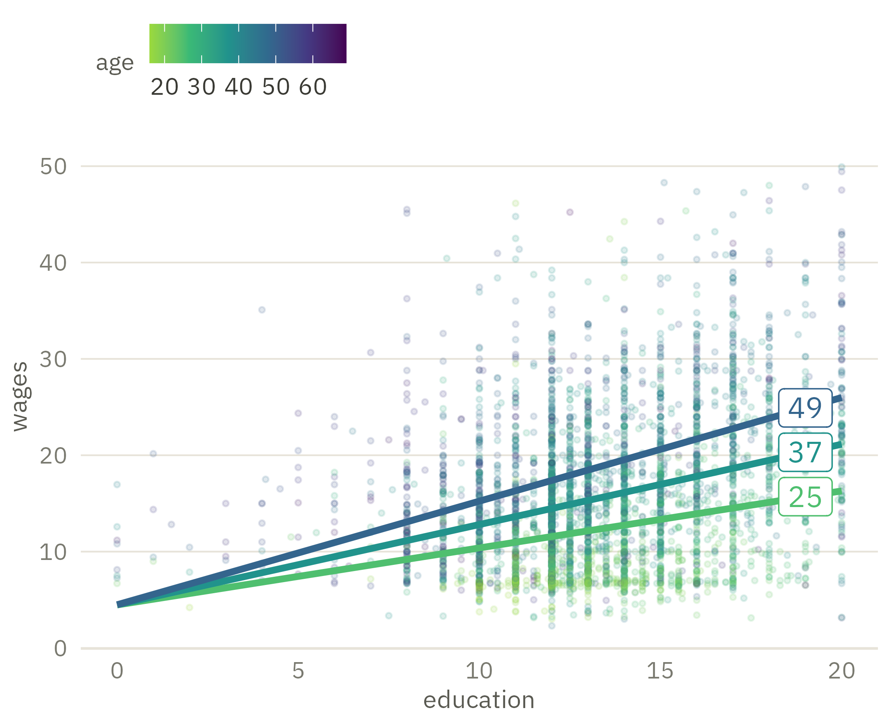
The effect at every age: compute it
# A tibble: 3 × 5
age effect se low high
<int> <dbl> <dbl> <dbl> <dbl>
1 25 0.591 0.0569 0.480 0.703
2 37 0.833 0.0369 0.761 0.906
3 49 1.08 0.0434 0.990 1.16 - A conditional effect is the slope of schooling at one value of the moderator: the coefficient of education, plus the interaction times that age. Here, one for every age from 16 to 69
- Its standard error comes from the uncertainty of both coefficients and from how they vary together.
vcov()holds all three numbers - 1.96 standard errors either side give the 95% interval, as in week 3
- One row: at 37, a year of school goes with $0.83 more an hour, and the interval runs from 0.76 to 0.91
Draw it: a line of coefficients
p_effect <- ggplot(ce, aes(age, effect)) +
geom_hline(yintercept = 0,
linetype = "dashed",
colour = "grey50") +
geom_ribbon(aes(ymin = low, ymax = high),
fill = dsvar_accent(),
alpha = .2) +
geom_line(colour = dsvar_accent(),
linewidth = 1.2) +
labs(x = "Age",
y = "Dollars more per year of school")
p_effect- Across is the moderator. Up is no longer the wage: it is the slope, so every point on the line is a whole regression coefficient
- The dashed line at zero means no relationship. The band stays above it at every age
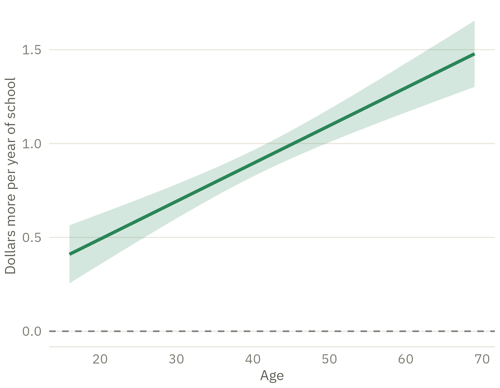
Show who is at each age
- The model draws its line across the whole range, whether or not anyone is there. The histogram on top counts the people at each age
- The band is narrowest around 35, where most people are, and widens toward 16 and 69
- With the patchwork package,
/puts one plot above another, and&gives both the same age axis
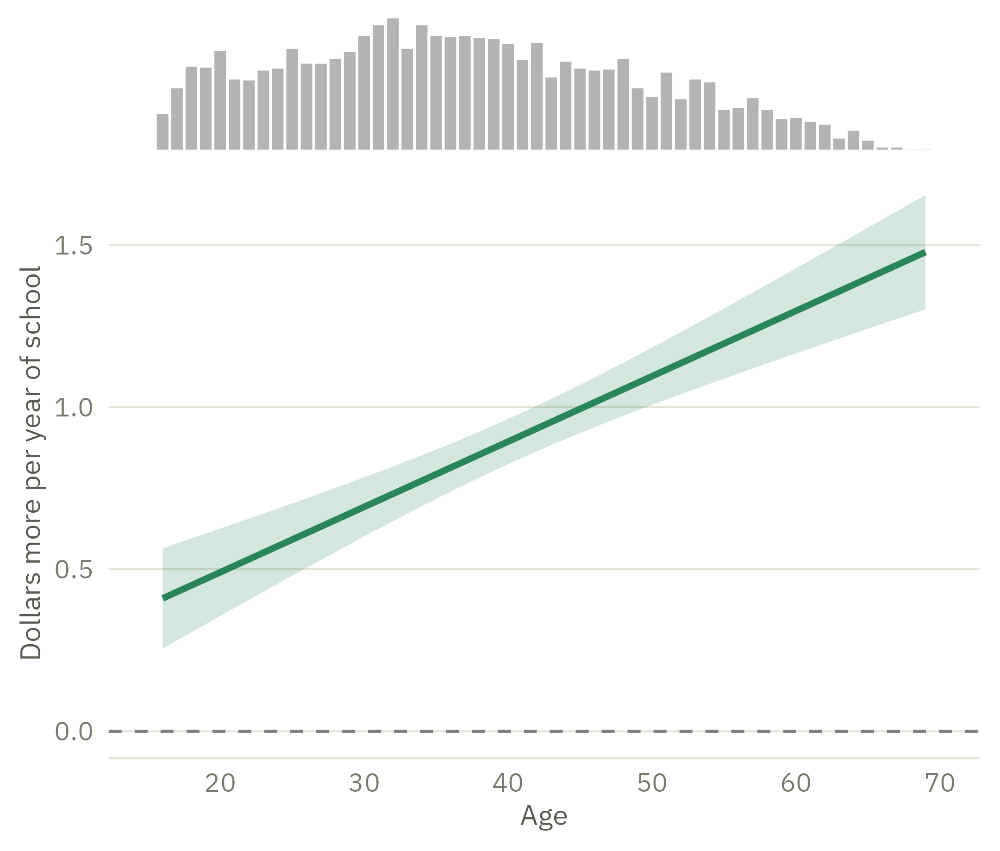
The same form, in our own paper
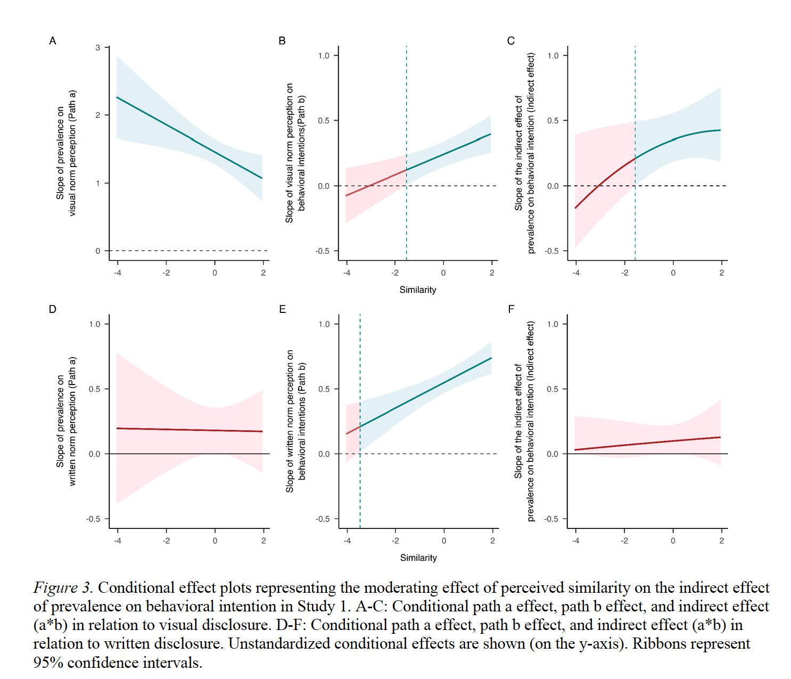
- Our study 1, the experiment from weeks 1 and 2: 589 people browsed a feed with many or few personal posts, then said what seemed normal there and whether they would post something personal themselves
- Across, in every panel: how similar they felt to the people in the feed, the moderator. Up: an effect
- Panel B: how strongly what seemed normal goes with their own intention to post, at each level of similarity
- The line turns red where its band includes zero, and a vertical dashed line marks the changeover
Figure 3 from Masur, P. K., & Parry, D. A. (2026). When sharing becomes the norm. Technology, Mind, and Behavior. © American Psychological Association; reproduced by one of its authors for teaching. Data: osf.io/zw6pb.
Panel B, rebuilt: where the band includes zero
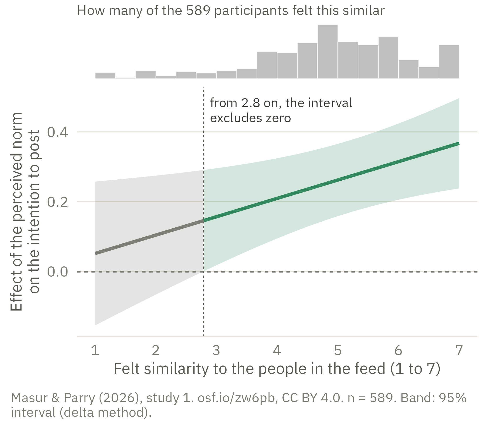
- The same three steps, on the model of intention with the perceived norm, similarity and their interaction
- One point: for people at 5 on the similarity scale, one point more of perceived norm goes with 0.26 points more intention
- Grey, below 2.8: the band includes zero. Green: it does not. The histogram shows who is in the grey part: 41 of 589 people
- Nothing switches on at 2.8. A band that just includes zero and one that just excludes it are nearly the same estimate, and the published figure, with stricter exclusions, puts the changeover about half a point higher
Setting 4 · The third variable
Show what could bend the line: in colour, in panels, or held constant in a model
- Ask of any relationship: for whom, and when? Which third variable could change it, and is it on the chart?
- A moderator with a few groups goes in colour or in panels. One that is a number needs the model: three picked lines on the data’s own axes, or the conditional effect across the whole range, with its band and the people under it
- In a survey there is always a third variable nobody measured. Say so
VII · Drawing a model
A model with several predictors has no single line to draw. Draw its coefficients.
A model with four predictors
Estimate Std. Error t value Pr(>|t|)
(Intercept) 1.381 0.033 42.323 0.000
education 0.048 0.002 22.263 0.000
age_group25 to 34 0.446 0.020 22.790 0.000
age_group35 to 44 0.644 0.020 32.824 0.000
age_group45 to 54 0.704 0.021 33.204 0.000
age_group55 to 69 0.658 0.026 25.472 0.000
sexMale 0.224 0.013 17.629 0.000
languageFrench -0.012 0.026 -0.477 0.633
languageOther 0.010 0.020 0.506 0.613lm()takes several predictors, joined by+. Each coefficient is the difference in log wage that goes with one predictor, with the others held constant- Age group, sex and language are categories, so each row compares one group with a reference: the youngest, women, and English speakers
- Most papers print this table. Which predictor matters most, and how sure is each number?
Step 1: the model as a table of rows
# A tibble: 8 × 4
term estimate conf.low conf.high
<chr> <dbl> <dbl> <dbl>
1 education 0.0477 0.0435 0.0519
2 age_group25 to 34 0.446 0.408 0.485
3 age_group35 to 44 0.644 0.606 0.683
4 age_group45 to 54 0.704 0.663 0.746
5 age_group55 to 69 0.658 0.607 0.708
6 sexMale 0.224 0.199 0.249
7 languageFrench -0.0124 -0.0632 0.0385
8 languageOther 0.00999 -0.0287 0.0487broom::tidy()turns a fitted model into a tibble with one row per coefficient.conf.int = TRUEadds the two ends of its 95% interval- A tibble is something ggplot can draw.
termwill be the row,estimatethe point, andconf.lowandconf.highthe ends of its line - The intercept goes. It is the log wage of someone with every predictor at 0 or at its reference, so it is not an effect of anything
Step 2: a point and its interval
mutate()turns log points into per cent, and sorts the rows by estimate- The dashed line at zero means no difference. Both language rows cross it
- Men earn 25% more than women of the same schooling, age group and language. A survey, so more means goes with
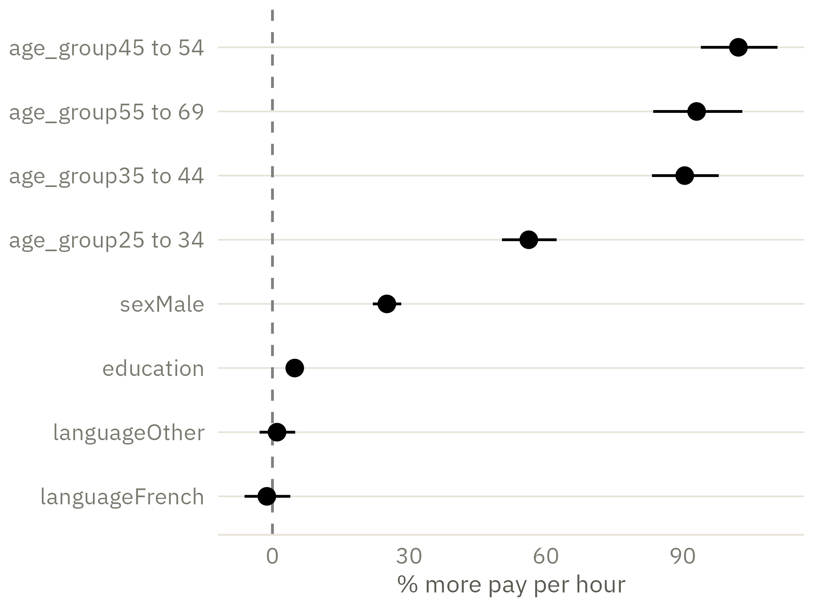
The row labels are R’s own names. Rename them before anyone else sees the chart.
Units decide the picture
slid |>
lm(log(wages) ~ education + age_group +
sex + language, data = _) |>
broom::tidy(conf.int = TRUE) |>
filter(term != "(Intercept)") |>
select(term, estimate, conf.low, conf.high) |>
mutate(across(-term, \(b) 100 * (exp(b) - 1)),
term = fct_reorder(term, estimate)) |>
ggplot(aes(estimate, term)) +
geom_vline(xintercept = 0, linetype = "dashed",
colour = "grey50") +
geom_pointrange(aes(xmin = conf.low,
xmax = conf.high,
colour = term == "education"),
show.legend = FALSE) +
scale_colour_manual(values = c(
"grey45", dsvar_accent())) +
labs(x = "% more pay per hour", y = NULL)slid |>
mutate(education = education / 4) |>
lm(log(wages) ~ education + age_group +
sex + language, data = _) |>
broom::tidy(conf.int = TRUE) |>
filter(term != "(Intercept)") |>
select(term, estimate, conf.low, conf.high) |>
mutate(across(-term, \(b) 100 * (exp(b) - 1)),
term = fct_reorder(term, estimate)) |>
ggplot(aes(estimate, term)) +
geom_vline(xintercept = 0, linetype = "dashed",
colour = "grey50") +
geom_pointrange(aes(xmin = conf.low,
xmax = conf.high,
colour = term == "education"),
show.legend = FALSE) +
scale_colour_manual(values = c(
"grey45", dsvar_accent())) +
labs(x = "% more pay per hour", y = NULL)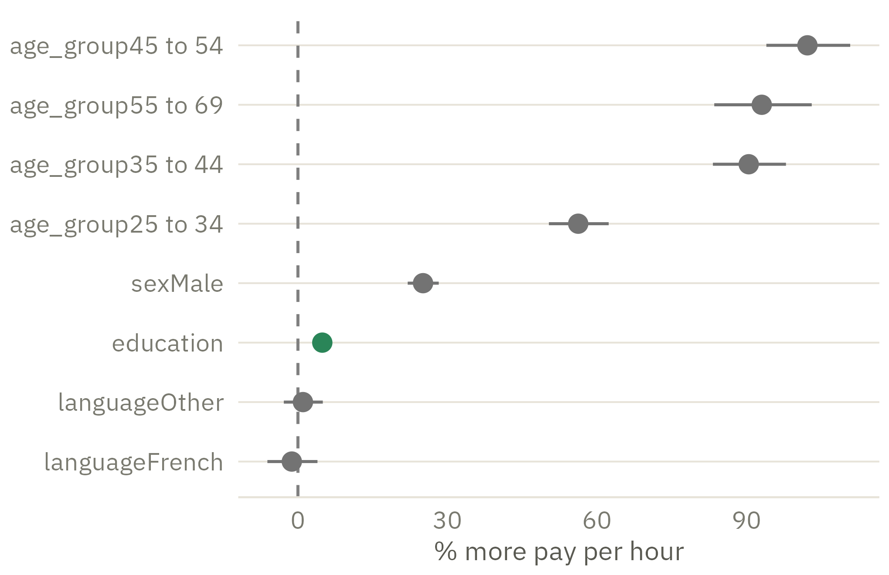
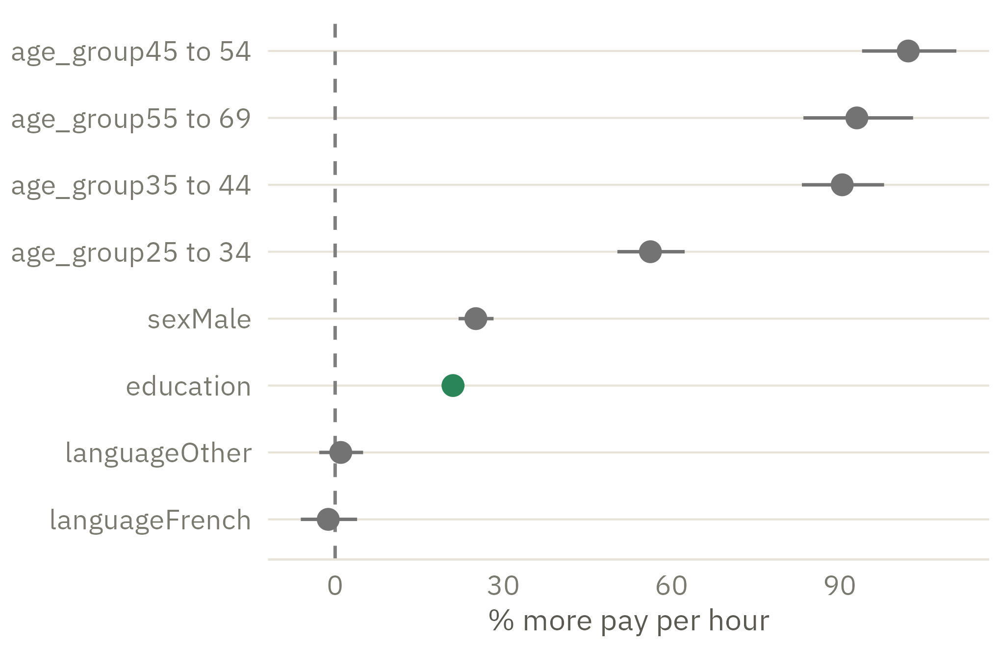
The last slide’s chart, with the education row in green. A year of school goes with 4.9% more pay: small, beside age groups that span ten years.
mutate() now counts schooling in steps of four years, about one degree: 21%. One line moved the point. Say what one unit is: what an equal step means, for a model.
Three outcomes, three models
m1 <- lm(norm ~ many_photos + many_texts, study1)
m2 <- lm(approval ~ many_photos + many_texts, study1)
m3 <- lm(intention ~ many_photos + many_texts, study1)
effects <- list(norm = m1, approval = m2,
intention = m3) |>
map(broom::tidy, conf.int = TRUE) |>
bind_rows(.id = "outcome") |>
filter(term != "(Intercept)") |>
select(outcome, term, estimate, conf.low, conf.high)
effects# A tibble: 6 × 5
outcome term estimate conf.low conf.high
<chr> <chr> <dbl> <dbl> <dbl>
1 norm many_photos 1.83 1.59 2.06
2 norm many_texts -0.265 -0.498 -0.0315
3 approval many_photos 1.01 0.811 1.22
4 approval many_texts -0.232 -0.435 -0.0292
5 intention many_photos 0.328 0.0666 0.589
6 intention many_texts -0.242 -0.503 0.0188- Our study 1 again. Each of 589 people was assigned a feed with many or few personal photos, and with many or few personal texts
- Afterwards they rated, from 1 to 7, how common posting personal photos seemed there (norm), how much others would approve of it (approval), and whether they would do it themselves (intention)
- One model per outcome, all with the same two predictors.
bind_rows()stacks the three tables, and.idsays which model a row came from
Several outcomes on one chart
effects |>
ggplot(aes(estimate, term, colour = outcome)) +
geom_vline(xintercept = 0, linetype = "dashed",
colour = "grey50") +
geom_pointrange(
aes(xmin = conf.low, xmax = conf.high),
position = position_dodge(width = .5)) +
scale_colour_manual(values = c(
"grey60", "#0072B2", dsvar_accent())) +
labs(x = "Difference on a 1-to-7 scale",
y = NULL)- Colour is the outcome, and
position_dodge()puts the three points of a predictor next to each other - All three outcomes use the same 1-to-7 scale, so one axis can hold them
- A feed with many personal photos moved the norm by 1.8 points, approval by 1.0 and intention by 0.3. Many personal texts moved all three about a quarter of a point the other way. The feed was assigned, so these are effects
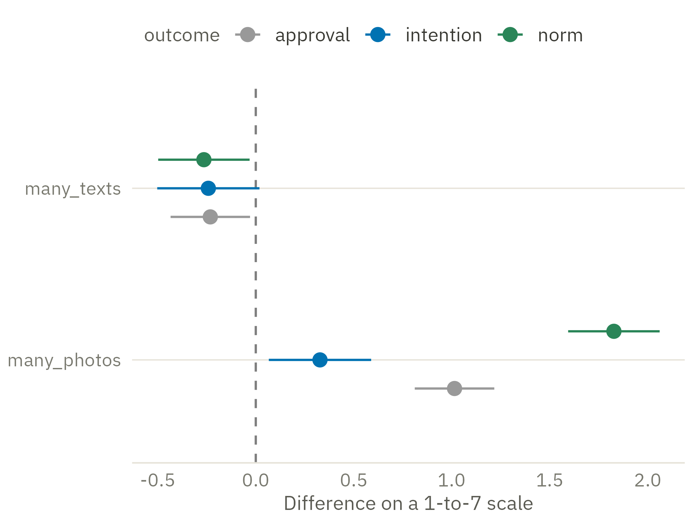
VIII · How many analyses?
Every interval so far was about the sample. None was about the choices in the analysis.
Every defensible analysis, at once
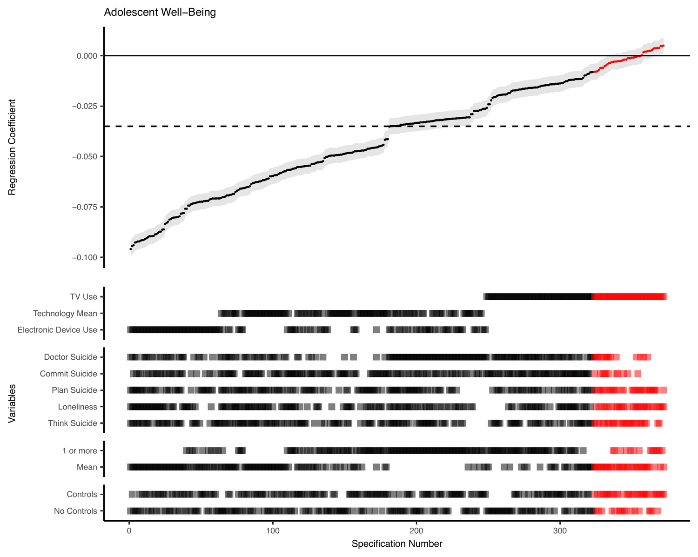
- Amy Orben and Andrew Przybylski asked whether teenagers’ use of digital technology goes with lower well-being, on three large surveys
- They ran every analysis they could defend: each measure of use, each measure of well-being, each set of controls. That is a specification curve
- How to read it: the upper panel is every estimate, sorted; the dashed line is their median. The lower panel says which choices produced each one
- The association was there, and about as large as the one with eating potatoes
Figure 1 from Orben, A., & Przybylski, A. K. (2019). The association between adolescent well-being and digital technology use. Nature Human Behaviour, 3, 173–182. © the authors; shown at reduced size for criticism and review.
Run every combination
setup()lists the choices: each control in or out, women, men or everyone, all ages or only 25 to 54specr()fits every combination: 24 models of what a year of school goes with
# A tibble: 6 × 3
controls subsets estimate
<chr> <chr> <dbl>
1 no covariates Female & 25 to 54 0.0592
2 no covariates Male & 25 to 54 0.0353
3 no covariates 25 to 54 0.0458
4 no covariates Female 0.0576
5 no covariates Male 0.0387
6 no covariates all 0.0465- One row is one model: which controls it had, who was in it, and its estimate, still in log points
Simonsohn, U., Simmons, J. P., & Nelson, L. D. (2020). Specification curve analysis. Nature Human Behaviour, 4, 1208–1214. · Masur, P. K., & Scharkow, M. (2020). specr: Conducting and visualizing specification curve analyses. R package.
Draw the curve
curve <- results$data |>
arrange(estimate) |>
mutate(rank = row_number(),
who = coalesce(as.character(sex), "Both"),
across(c(estimate, conf.low, conf.high),
\(b) 100 * (exp(b) - 1)))
who_colours <- c(Both = "grey60", Male = "#0072B2",
Female = dsvar_accent())
p_curve <- ggplot(curve, aes(rank, estimate,
colour = who)) +
geom_pointrange(aes(ymin = conf.low,
ymax = conf.high),
size = .3) +
scale_colour_manual(values = who_colours) +
labs(x = NULL, y = "% more pay per year")
p_curvearrange()sorts the models by estimate, andrankis their place in that order- One dot is one model, with its 95% interval, coloured by who was in it. The leftmost says 3.6% more pay per year of school, the rightmost 6.6%
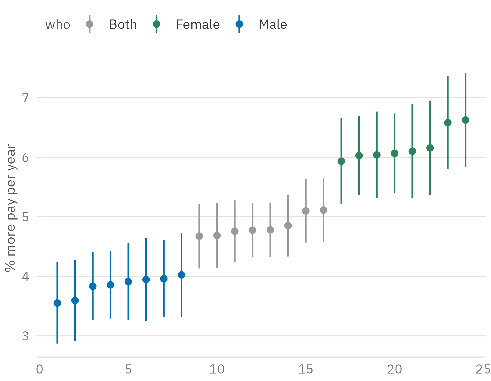
Add the choices underneath
p_choices <- curve |>
pivot_longer(c(controls, subsets),
names_to = "choice",
values_to = "option") |>
ggplot(aes(rank, option, colour = who)) +
geom_point(shape = 15, size = 2,
show.legend = FALSE) +
facet_grid(rows = vars(choice),
scales = "free_y", space = "free_y") +
scale_colour_manual(values = who_colours) +
labs(x = "Models, by estimate", y = NULL)
p_curve / p_choices- A square marks the option a model used. Read one column downward: a dot, then the squares under it
- Every estimate is positive, whichever model you run. What moves its size most is who is in it; the controls barely do
- The list of choices is itself a choice, and the spread between the dots is not a confidence interval. It is the uncertainty Many analysts showed
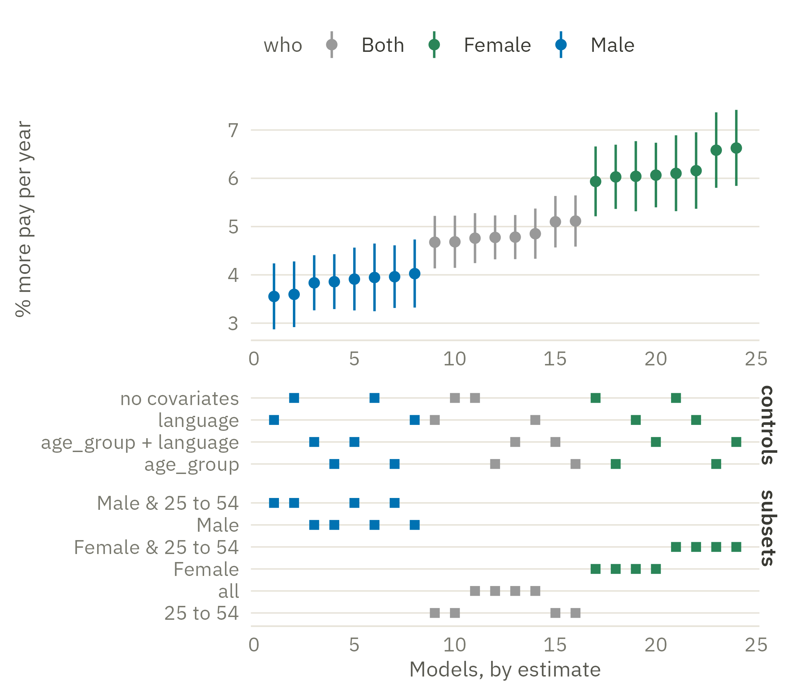
IX · This week
This week’s bullshit chart
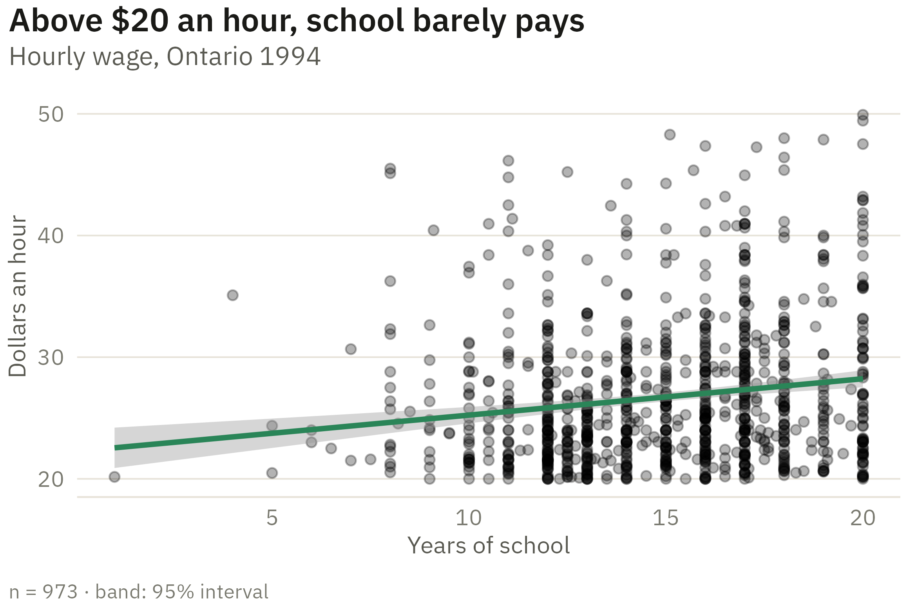
- The title is true of these 973 people: each year of school goes with only 0.30 dollars more
- The line is correctly fitted, and the band is honest
- Look at who is on it
Every number is right. What is wrong?
One line did it
slid |>
filter(wages >= 20) |>
ggplot(aes(education, wages)) +
geom_point(alpha = .3) +
geom_smooth(method = "lm",
colour = dsvar_accent()) +
labs(
title = "Above $20 an hour, school barely pays",
subtitle = "Hourly wage, Ontario 1994",
caption = "n = 973 · band: 95% interval",
x = "Years of school", y = "Dollars an hour")filter(wages >= 20)kept only people who already earn a lot: who is in it, week 2’s setting, and the twin in this week’s portfolio entry- Selecting people on the outcome flattens the slope, from 0.79 to 0.30 dollars a year
Journals that publish only significant results crop the same way, and so does any wage survey: only people in work have a wage (Heckman, 1979).
Principle 8 · A line is a claim. Say what it ignores.
How points pile up
Transparency, jitter or counts, and say which
Which line is drawn
A line the data can carry, and its band named
What an equal step means
Linear for differences, log for ratios
The third variable
In colour, in panels, or in the model
Four questions to ask of any relationship, and one from week 2: who is in it?
Thursday
Thursday
- Gapminder, second week: the same countries, now two variables and every year at once
- Part I, with the teacher: Rosling’s chart, built step by step: income against life expectancy, a log axis, the line and its numbers, continent and population, then the model drawn as coefficients
- Part II, on your own: a claim about which countries gained most years of life from 1952 to 2007, sketched on paper, then built
Portfolio entry 3 · due Sunday
- A relationship, and what would break it, with its misleading twin from the same columns
- The twin changes one setting, and one sentence names it: how points pile up, which line is drawn, what an equal step means, the third variable, or who is in it
- Say in the caption what the band is
Before next Tuesday: Healy, chapters 5 and 6 (socviz.co); Wilke, Visualizing associations, Handling overlapping points and Multi-panel figures (clauswilke.com/dataviz).
A line is a claim.
Say what it ignores.
Next week: one of the two variables is time.